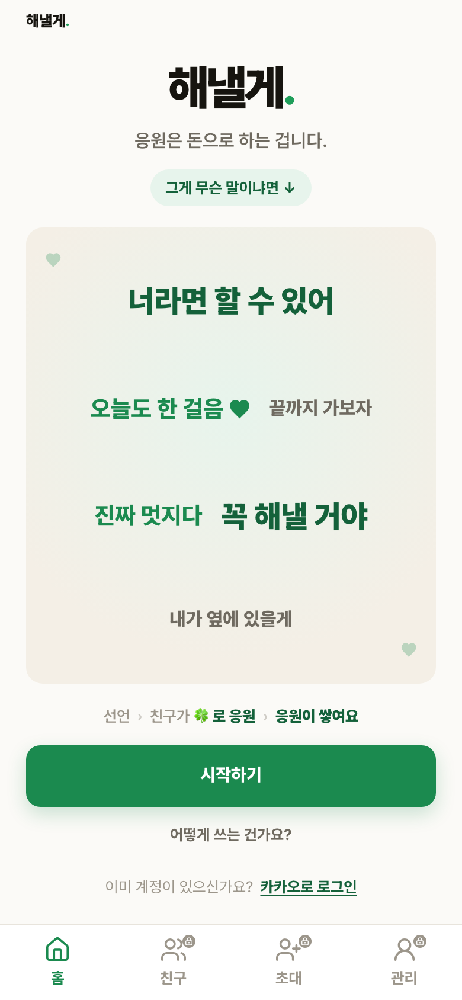
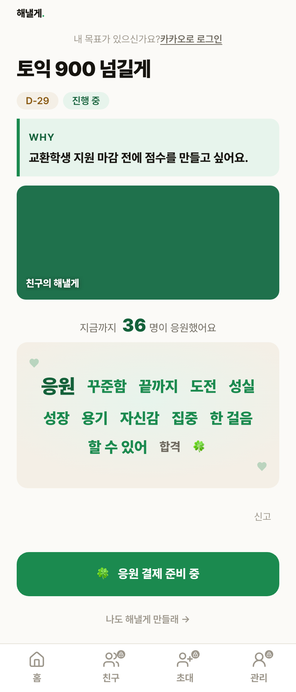
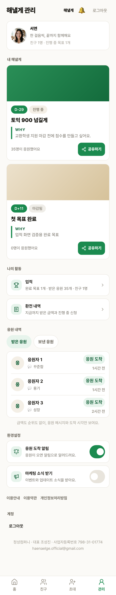
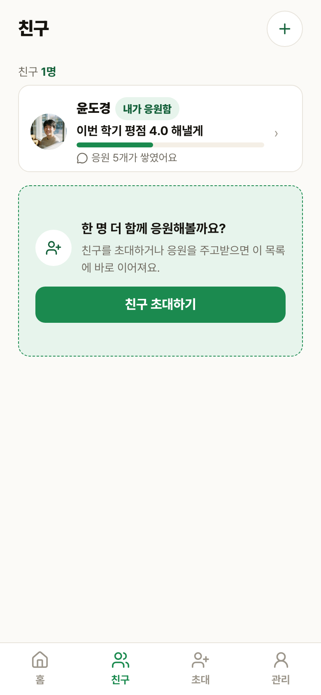
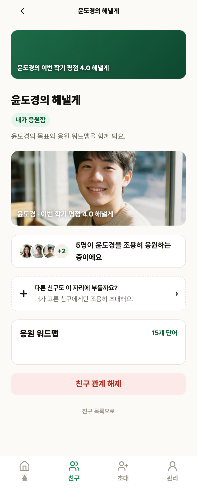
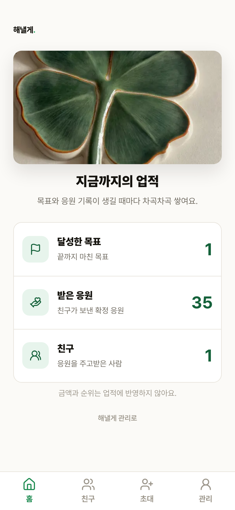
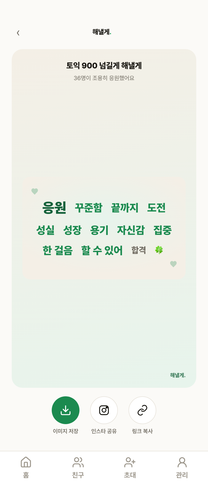
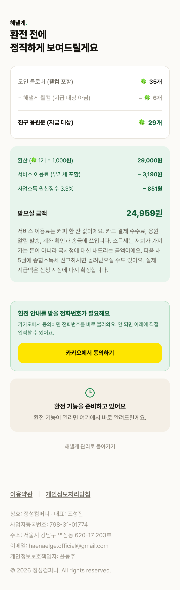

랜딩

프로토타입을 먼저 개정한 뒤 같은 계약을 로컬 제품 화면에 반영했습니다. 각 화면에서 선택 버튼과 메모를 남기면 브라우저에 저장됩니다. 운영 배포 결정은 포함하지 않습니다.
공개 목표 제목은 v1의 27px 선행 구조로 복원했습니다. 친구 목록과 상세에는 DB 응원 귀속으로 계산한 관계 방향을 표시합니다. 작성 경로가 없는 비공개 근황은 제거했습니다. 업적은 Higgsfield 실사 자산으로 교체했고, 워드맵은 하단탭 유지 화면으로 재분류했습니다.







